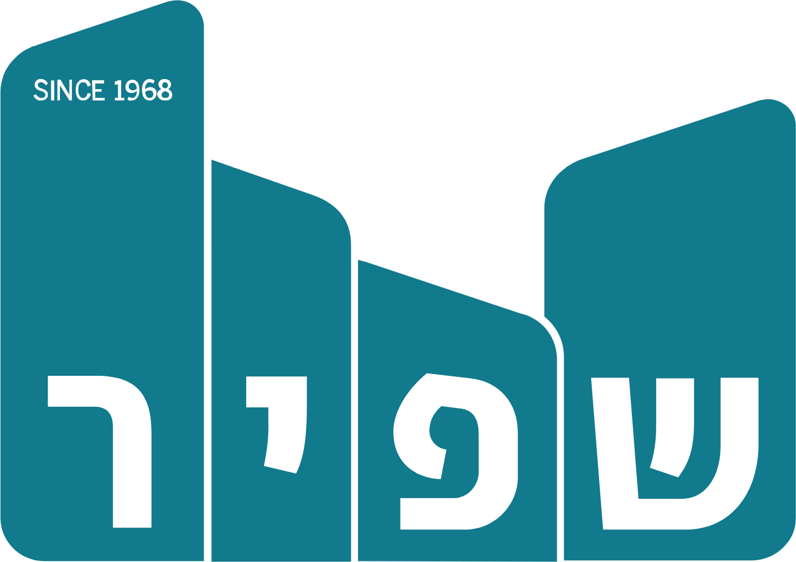

על WDI
▾
מי אנחנו
ניסיון רלוונטי
DNA וערכים
הפרויקט
▾
תמונה כוללת
מורכבות ואתגרים
מפת בעלי העניין
15 אבני הדרך
תקנים ומפרטים טכניים
מנגנון הניהול
▾
מתודולוגיות
תרשים הצוות
שליטה בידע | WDI Agent
מכרז 07/2024 — הפרויקט הראשון מסוגו בישראל
מתקן נאות חובב
להפיכת פסולת לאנרגיה
ניהול הפרויקט ע"י WDI — מנהל התכנון הרשמי של ההצעה הזוכה
קונסורציום:

